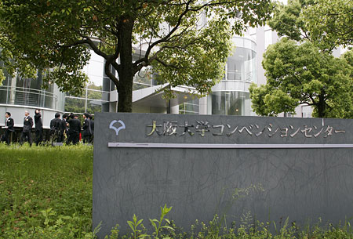
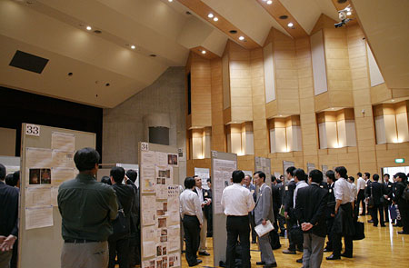
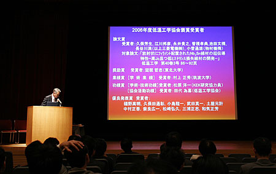
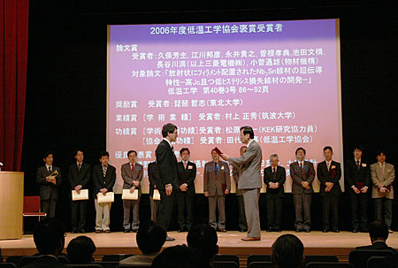
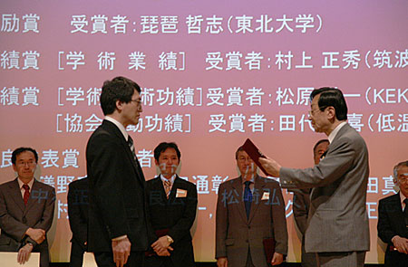
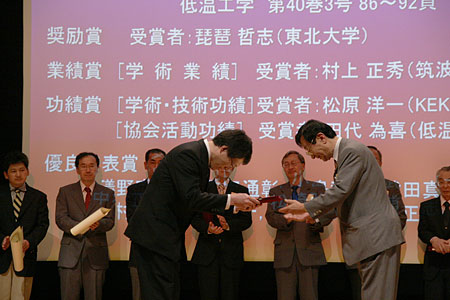
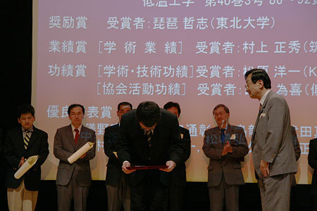
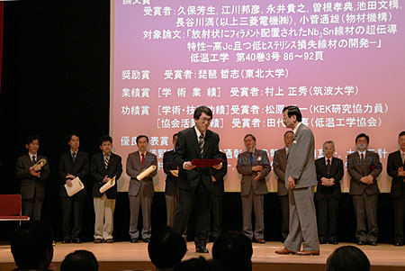
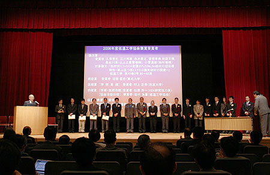
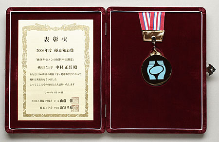

Award
中村が（社）低温工学協会より，「2006年度優良発表賞」を受賞しました！
2006年5月16日（火） 於：大阪大学コンベンションセンター

2006年度 春季低温工学・超電導学会も、ここで前日からありました。
2006年度 春季低温工学・超電導学会も、ここで前日からありました。

授賞式の前、コンベンションセンター内ではポスターセッションが行われました。
授賞式の前、コンベンションセンター内ではポスターセッションが行われました。

午後2時15分、授賞式が始まり、受賞者の一覧が画面に映し出されました。
午後2時15分、授賞式が始まり、受賞者の一覧が画面に映し出されました。

中村の名前が読み上げられました。
中村の名前が読み上げられました。

受賞の対象となったのは、2005年春季の「液体キセノンの屈折率の測定」の発表です。
受賞の対象となったのは、2005年春季の「液体キセノンの屈折率の測定」の発表です。

表彰状とメダルを受け取りました。
表彰状とメダルを受け取りました。

どうもありがとうございます。
どうもありがとうございます。

緊張が解けた瞬間です。
緊張が解けた瞬間です。

壇上に並んだ受賞者たち。優良発表賞受賞の10名は、
2005年度の発表560余りの中からの選出です。
壇上に並んだ受賞者たち。優良発表賞受賞の10名は、
2005年度の発表560余りの中からの選出です。

いただいた表彰状と記念メダルです。
Photo／M.Nakamura
いただいた表彰状と記念メダルです。
優良発表賞受賞について
本賞は（社）低温工学協会 から，低温工学・超電導学会において，得られた貴重な成果を限られた時間と空間の中で如何に多くの聴講者の理解を得るために努力したかを評価の対象に贈られるもので，2005年春季の学会における発表「液体キセノンの屈折率の測定」が対象となり，表彰状と記念メダルが授与されました。
対象となった発表は，様々な宇宙素粒子物理学実験や医療装置でシンチレータとして放射線測定に用いられつつある液体キセノンについて，その屈折率を独自開発した装置を用いて真空紫外から可視までの広い波長範囲で精度良く測定することに世界で初めて成功した研究の報告で，シンチレーション光の真空紫外域においては，過去に報告されていた実験値を完全に否定しました。この結果は，小柴博士のノーベル賞受賞研究で有名な岐阜県神岡鉱山で進行中のXMASS実験や，スイスのμ粒子希崩壊探索実験MEG，フランス等で開発中の医療用PETなど，液体キセノンを用いる様々な分野で用いられる貴重なデータになっています。